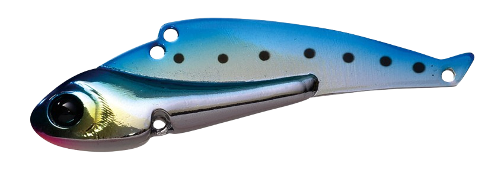
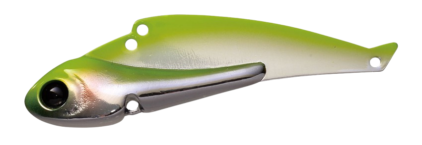
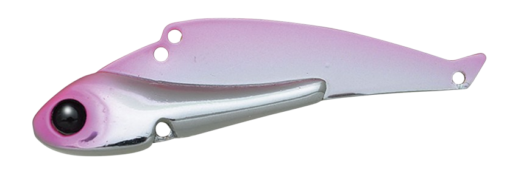
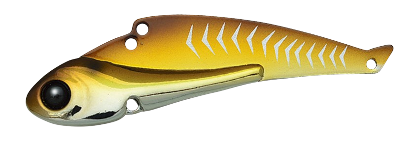

タイニー冷音
タイニー冷音は邪道（JADO PRODUCTS）のメタルバイブレーションです。
新設計コンパクトボディが生むタイトバイブレーション。トラブルが少ないダーティングマスター「冷音（レイン）」の、ダウンサイズモデルです。
ただ小さくしただけでなく、各部を新設計。特にテールの絡みを防ぐフィンを見直して、テーリング（ラインがフックに絡むトラブル）を減らしています。10gでも高比重で空気抵抗が少なく、しっかり飛びます。

※画像は通常サイズの冷音です（タイニー冷音は形が同じで、ひと回り小さい55mm）。
スペック
- メーカー
- 邪道（JADO PRODUCTS）
- タイプ
- メタルバイブレーション
- 全長
- 55mm
- 重量
- 10g
- フック
- #10×2
- リング
- #1
- カラー
- 全9色
- ターゲット
- シーバス・チヌ・メッキなど
- 価格
- 1,320円（税込）
- 発売
- 2020年10月
▼今すぐチェック

タイニー冷音の特徴
小さくても飛ぶ、絡みにくいメタルバイブ
-
新設計のタイトバイブレーション
コンパクトなボディを新しく設計し、細かく速いタイトなバイブレーションを出す。小さいベイトを食べている時に合わせやすい。
-
テールの絡みを減らすフィン
テールのフィンを見直して、キャストやリフトの時にラインがフックに絡むテーリングを減らしている。
-
10gでも飛ぶ
コンパクトなボディに10gのウェイトを入れ、空気抵抗の少ない形で抜群の飛距離を出す。
タイニー冷音の使い方
基本はただ巻きで、タイトなバイブレーションで誘います。リフト＆フォールで底付近を探るのも定番です。
冷音シリーズはダート（左右に跳ねる動き）を出しやすいのも特徴なので、ロッドを軽くあおってダートさせ、フォールで食わせるのも効果的です。
タイニー冷音の得意な状況
シーバスが小さいベイトを食べている時や、港湾・河川のちょっとした流れなど、小さめのメタルバイブで探りたい場面に向いています。
軽いので、14gや24gの冷音より浅い場所やゆっくり引きたい場所でも使いやすいサイズです。
小さいベイトを食っている時は、このサイズに落とすと釣れることが多い小型メタルバイブです。
ワンポイント
邪道は、ラインアイに付けるスナップは#1がおすすめとしています。小さいスナップにすることで、テーリングを避ける効果もあります。
冷音シリーズの使い分け
| モデル | 全長・重さ | フック・リング | こんな時に |
|---|---|---|---|
| タイニー冷音 | 55mm・10g | #10×2・#1 | 小さいベイトの時、浅い場所やスローに引きたい時 |
| 冷音 14g | 62mm・14g | #8×2・#2 | 港湾・河川での基本サイズ |
| 冷音 24g | 77mm・24g | #6×2・#2 | 飛距離が欲しい時、深い場所や流れが速い時 |
※数値は公式ページより。価格（税込）はタイニー冷音 1,320円、冷音24g 1,375円。
オススメカラー
タイニー冷音は全9色（冷音と共通のカラーのうち9色）。そのうち4色を紹介します（画像は公式の冷音のカラーチャートより）。

01 メッキイワシメッキのイワシカラー。日中の澄み潮で強いフラッシング。

03 チャートグローベリーチャートとグローのお腹で目立つ、夜や濁り潮の定番。

14 ちぇりぶろピンク系のアピールカラー。

15 ZEIGOゼイゴ（アジ）を意識したナチュラル系。
▼今すぐチェック
タイニー冷音に似ているルアー
-
 ラナケラ57-13S
トレフルクリエーション
詳細はこちら＞
ラナケラ57-13S
トレフルクリエーション
詳細はこちら＞
57mmの小型バイブレーション。
-
 ナレージ50
ブルーブルー
詳細はこちら＞
ナレージ50
ブルーブルー
詳細はこちら＞
小型のシーバス用バイブレーション。
-
 カンナ15
ポップシークルー
詳細はこちら＞
カンナ15
ポップシークルー
詳細はこちら＞
15gのメタルバイブ。